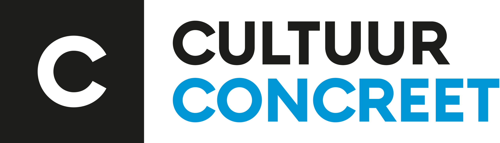
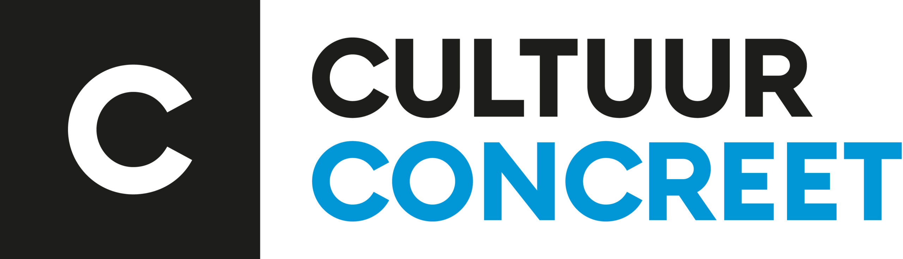

ETC Handbal Hoogvliet
ETC Handbal Hoogvliet
Home | Bestuur | Trainingstijden | Evenenmenten | Zomerland | Avondvierdaagse | Esports | Agenda | Claim je veld | Contact |
Zomerland
Dit jaar is de zesde editie van Zomerland Hoogvliet. Vorig jaar trok Zomerland Hoogvliet bijna 4.500 deelnemende kinderen. Sommige kinderen bezochten Zomerland Hoogvliet meerdere dagen achter elkaar. Zomerland Hoogvliet wordt georganiseerd door Handbalvereniging ETC uit Hoogvliet. In de zomervakantie van 2024 is de Botreep 10, van zaterdag 13 t/m woensdag 17 juli weer het toneel van het grootste kinderfeest van Hoogvliet. Ja je leest het goed dit jaar ook in het weekend en in de avond. We zijn open van 14.00 uur tot 20.00 uur. Zomerland Hoogvliet wordt mede georganiseerd met het Sportbedrijf Rotterdam en is dan ook veel dank verschuldigd aan de Hoogvlietse sportregisseur Belinda Janszen voor de goede samenwerking. Op Zomerland Hoogvliet kunnen kinderen uit Hoogvliet en omgeving dagelijks van 14.00 tot 20.00 uur diverse Sport, Spel en Fun activiteiten doen Zomerland Hoogvliet is als activiteit ook aanwezig in het jeugdvakantiepaspoort, hiermee bezoek jij alle dagen gratis het terrein. Zomerland Hoogvliet is tot stand gekomen door een Bewonersinitiatief dat is toegekend door de gebiedscommissie Hoogvliet. Maar ook door middel van een bijdrage van de sponsoren; Sint Laurens Fonds Rotterdam, Volkskracht, RBLO, cultuur concreet en Gemeente Rotterdam. Daarnaast zijn er ook diverse partners zoals Sportbedrijf Rotterdam, Dock, Attractieverhuur TimTom, Jeugdfond Sport en Cultuur. De organisatie is hen allen veel dank verschuldigd.
Partners

 


Activiteiten Schema
| Programma Zomerland Hoogvliet 2024 |
| Zaterdag 13 Juli 2024 |
| Zondag 14 Juli 2024 |
| Maandag 15 Juli 2024 |
| Dinsdag 16 Juli 2024 |
| Woensdag 17 Juli 2024 |